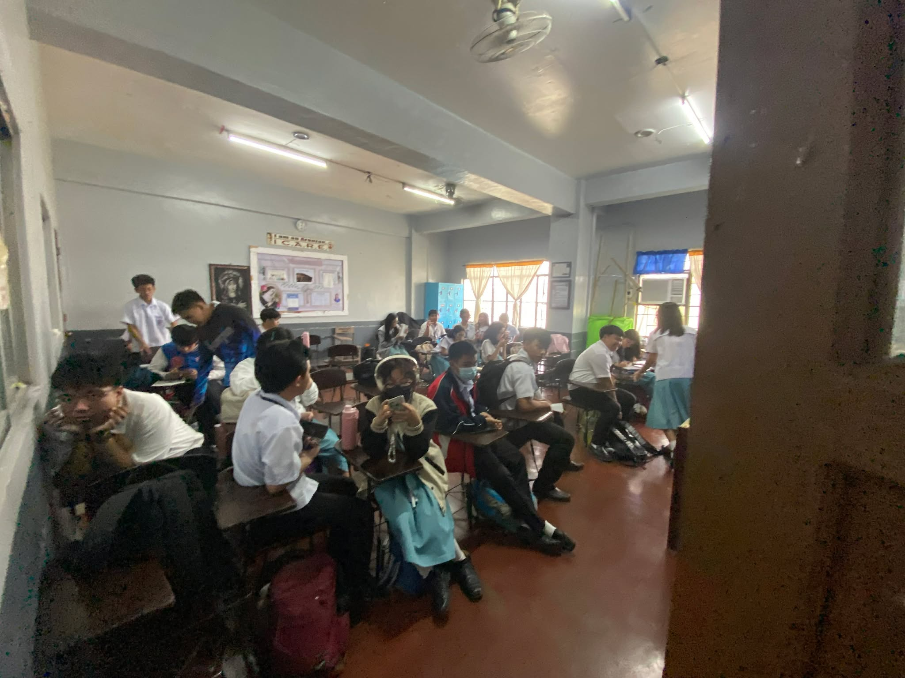
Most classrooms follow a common format with armchairs, teachers table, a flatsceen tv, a blackboard and lockers.
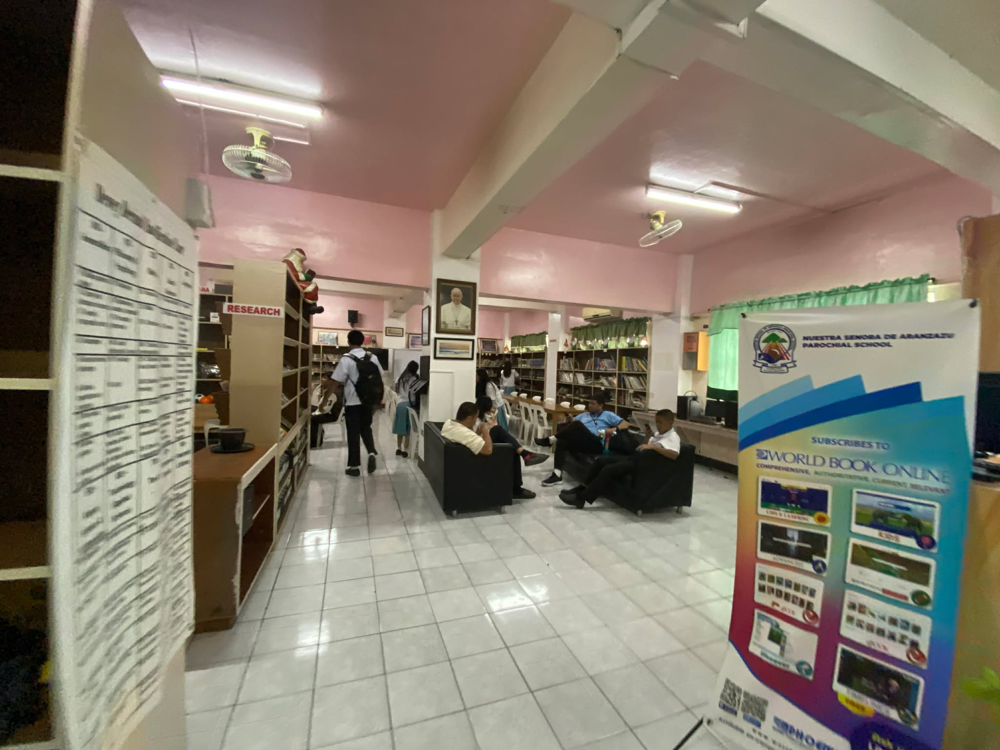
A large library filled with many books that range from every genre. Do note they use the Dewey decimal system, and they have a printer that is available for student use. SIPs of past students are also stored here.
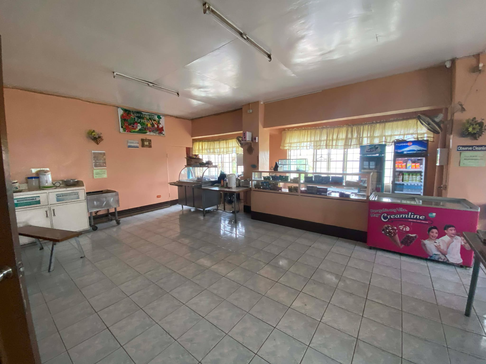
A place where students can come together with their peers while eating food. The Canteens both sell food cooked in-house and snacks.
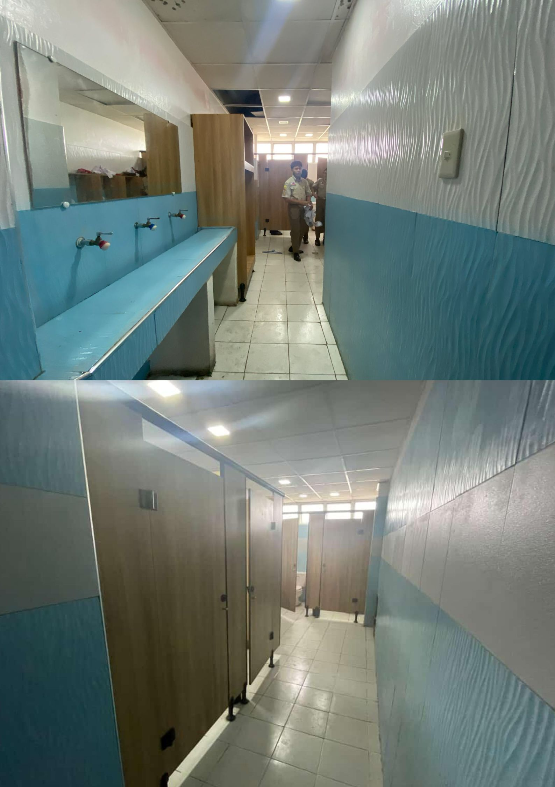
All floors have at least one comfort room, these comfort rooms are separated between genders.

There is a Computer Laboratory on the 2nd and 4th floors that can accommodate an entire class.
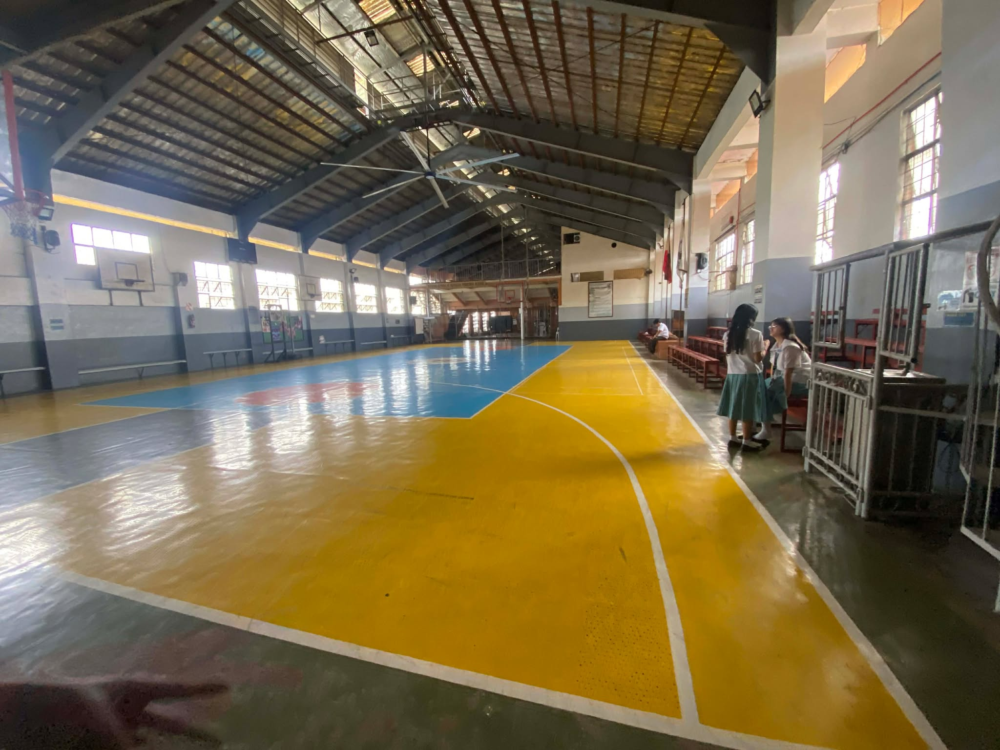
At the 4th floor the gymnasium is located. Students mostly spend their time here during P.E time or morning assembly.
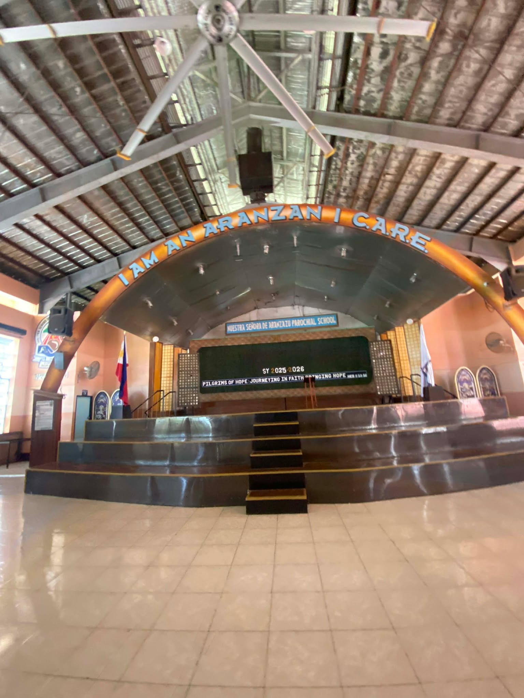
Most special events are held in this area i.e culminating activity.
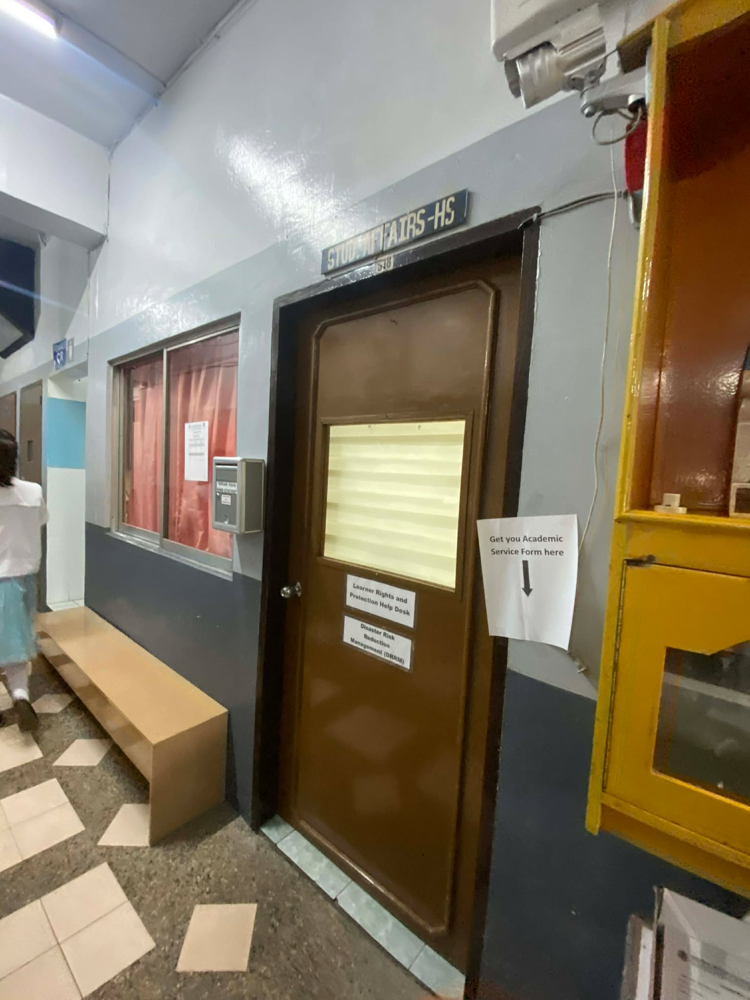
The Office of Student Affairs is where most disciplinary action is conducted. The vice principal is also stationed here also with the Head of Student Affairs.

Students use this laboratory to cook and bake food.
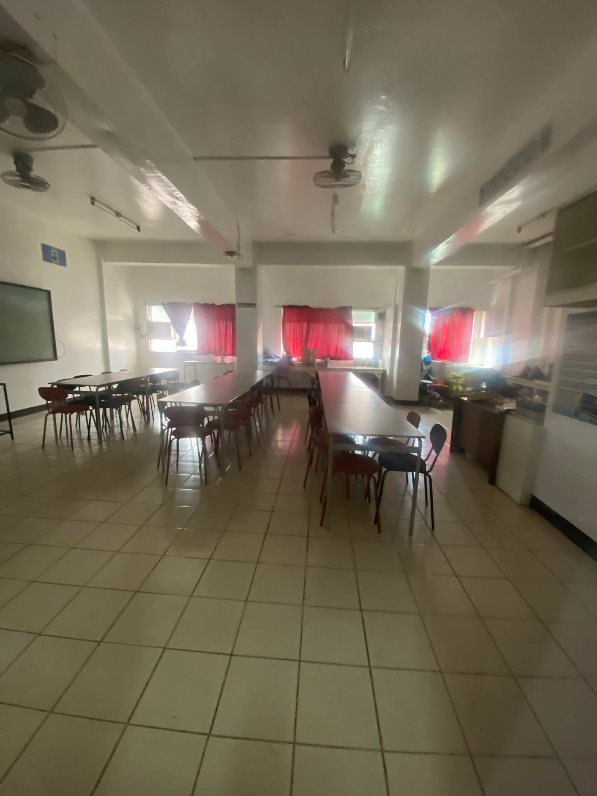
It contains many scientific apparatuses and a giant tv screen.

A lab with many test tubes and running water to experiment with chemicals.
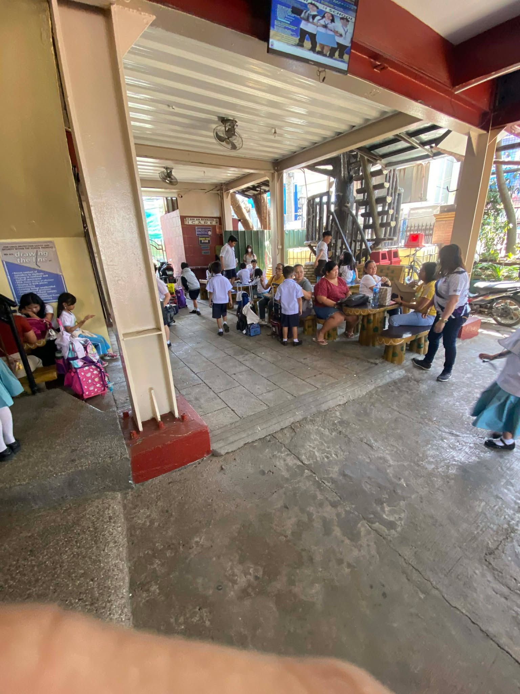
Waiting area for students and parents.
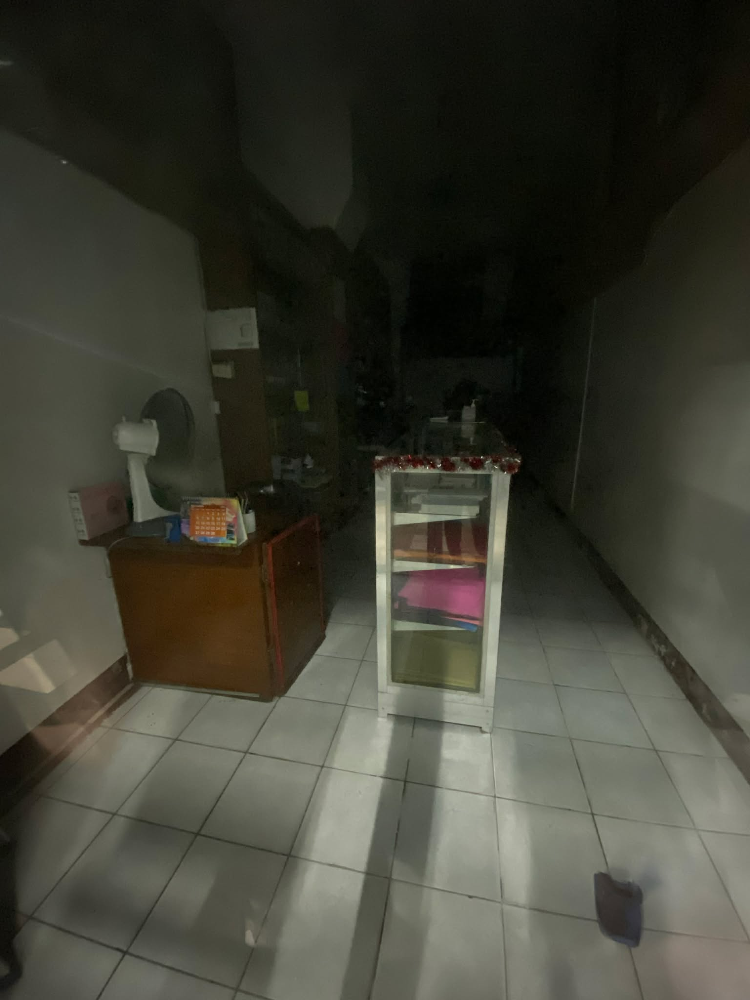
School supplies and uniforms are sold here.
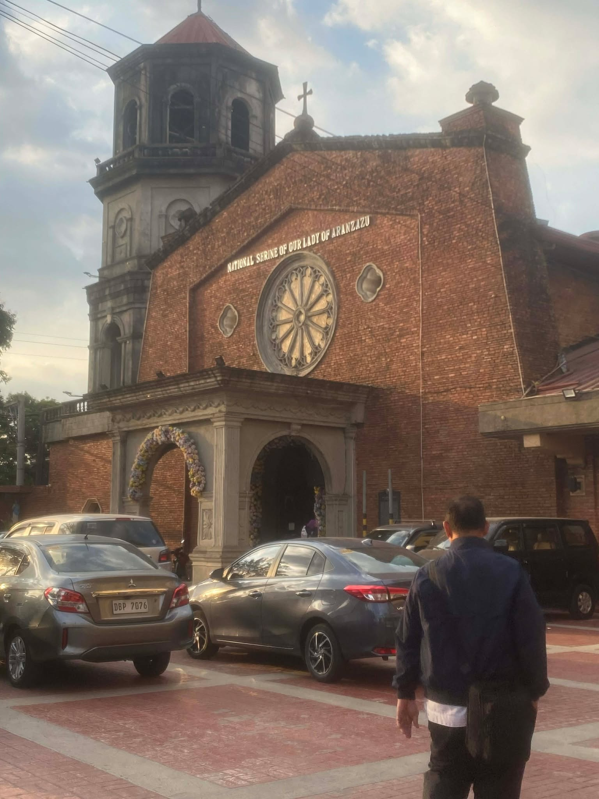
A place where students are required to attend Pananagutan Mass, Sunday Mass, and First Friday Mass.